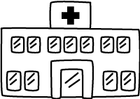

インフルエンザ予防接種の受付について
インフルエンザ予防接種の受付を開始しました。対象・費用・予約方法などの詳細は、ご来院前にお電話でご確認ください。
北青山の、妥協なき内科臨床
症状の表面だけでなく、生活の破綻から立て直します。
【院長からの警告】「これだけで痩せる」「免疫力が上がる」と断言する広告やネットの無責任な情報を鵜呑みにするな。サプリは薬の代わりにはならん。処方薬を自己判断で止めるのは厳禁。
01 / NEWS
休診日や予防接種など、医院からのご案内です。

インフルエンザ予防接種の受付を開始しました。対象・費用・予約方法などの詳細は、ご来院前にお電話でご確認ください。
8月11日から8月15日まで休診予定です。診療再開日や最新の診療体制は、事前にお知らせをご確認ください。
11月7日（土）は院内研修のため午前のみの診療となります。ご不便をおかけしますが、ご理解のほどお願いいたします。
※上記は掲載例です。公開前に日付・休診期間・診療内容を必ず実際の情報に差し替えてください。
当院の診療方針
薬が必要なときは、医学的な根拠と見通しを持って処方します。しかし、根本的な原因を取り除かずに薬で症状を抑え込むだけの対症療法に逃げることはしません。
最近の医療サイトは、広告会社が磨いた耳障りの良い言葉であふれている。だが、診察室であなたの体と向き合うのは、その虚構ではない。この長い文章を私が書くのは、診察の前に私の考え方を隠さず伝えておきたいからだ。「検査で異常なし、はい終わり」でも、「気の持ちようだ」で片づけるのでもない。何が身体の破綻を生じているのかを一緒に突き止める。読んで疑問が残ったら、遠慮なく聞いてほしい。納得できる説明をするのも臨床医の務めだ。
轟内科医院 院長 轟 健太郎
03 / ARCHIVE
数字や思い込みだけで判断を急がないために、臨床医として口うるさく確認したいこと。
※個別の病状判断にあたっては、必ず医師の直接の診察に基づき決定されます。
04 / SPECIAL CORNERS
診察室の理屈っぽさと、日常の摂理に向き合う硬派な検証記録。
「体を鍛えているから何を食ってもいい」という理論は論外だが、「ストイックに制限しすぎて心を病む」のも本末転倒だ。私は旨いものを否定しない。ただし、その代償と摂取頻度のバランスを自分で計算できる理性を求めている。
運動についても同様だ。義務感だけで体を痛めるまで追い込むのは感心しない。自らの肉体の限界と対話しながら継続可能な形を探るべきだ。これは私の趣味の話であり、個々の治療方針は診察で相談してほしい。
診察室でよく耳にする誤解や、世間の広告にあふれる健康法を、臨床医学と生理学の基本に立ち返って一刀両断する。耳ざわりのよい宣伝文句に惑わされず、何がわかっていて何がわからないのかを見極めなさい。表現は厳しいかもしれないが、患者を責めるためではない。あなたの大切な身体に関わる判断を、根拠の薄い商売に預けてほしくないからだ。
院長：まず、バナナだけに特別な脂肪燃焼作用があるかのように話を広げるのはやめなさい。体重が減ったのなら、朝食を置き換えたことで一日の総摂取エネルギーが消費エネルギーを下回る状態が続いた、といった物理的な説明が妥当だ。食事記録や活動量を見ずに、バナナの手柄だと決めつけることはできない。
果物に含まれる糖質の代謝は、食べる量、熟度、食事全体、個人の健康状態などに左右される。「果糖だから血糖値が必ず急上昇する」と一括りにするのも正確ではない。果物そのものと、人工的に糖を加えた飲料や菓子を同じ扱いにするな。糖尿病などで食事指導を受けている人は、流行の方法を自己流で始める前に主治医や管理栄養士へ相談すること。
体重を落としたいなら、単品食品の神話にすがるのではなく、続けられる食事、活動、睡眠を見直しなさい。朝にバナナを食べることが生活に合う人もいるだろう。だが「バナナを食べれば痩せる」という広告の結論に飛びつくな。食べたものと体重の変化を記録し、体調も含めて冷静に判断する。そこを省いて成功談だけを一般化することは、医学ではなくただの宣伝だ。
院長：数をそろえれば健康になる、という安易な理屈は通らない。サプリメントは、不摂生な食事や睡眠不足を帳消しにする免罪符ではない。たんぱく質やビタミン、ミネラルを含む基本の食事が整わないまま、高価な製品を次々に足すのは、ボロ家の土台を直さず上から高級なペンキを塗るようなものだ。まずは地に足のつった定食を食え。
ただし、サプリメントをすべて否定するほど偏屈ではない。栄養素の欠乏が確認されている場合や、特定の状況で医学的に補給が必要となるケースはある。大切なのは、何を、なぜ、どの量で使うのかを自分で確かめることだ。成分の重複や過剰摂取、処方薬との相互作用が問題になる場合もある。「天然」「高濃度」「医師推奨」といった謳い文句だけで安全性や効果が保証されるわけがない。
現在飲んでいる製品があるなら、商品名や成分表示、摂取量がわかるものを診察時に見せてほしい。薬を服用中の人、持病のある人、妊娠中・授乳中の人は、自己判断で追加する前に必ず医師または薬剤師へ相談すること。基本の食事を整え、必要性を確認して使う。それが医療における正しい順序だ。
院長：検索結果の画面と、目の前のあなたの身体は違う。頭痛、慢性的な倦怠感、動悸といった症状は、数多くの異なる病気や生活上のストレスによって引き起こされる。検索結果に書かれた特定の項目が当てはまるからといって、その病気だと自己決定してはならない。反対に、検索で見つからなかったからといって油断していいわけでもない。
ネットの情報は、信頼できる医療機関や公的機関の発信元を確認し、診察時に尋ねたい疑問を整理するために使いなさい。正しい診断には、症状が始まった時期や経過、既往歴、服薬状況、実際の診察所見、必要な検査結果をすべて合わせて考える必要がある。検索画面だけで自己診断を固めたり、処方された薬を勝手に中断したりするのは厳に慎むこと。
受診する際には「いつから」「どんなときに」「どの程度」「どう変化したか」を正確に伝えてほしい。ネットで調べて気になった病名があるなら、そのページをそのまま見せてくれて構わない。疑問を持つことは素晴らしいことだ。だが、答えを先に決めて自分の身体をそれに当てはめるのではなく、情報はあくまで診察の材料にしなさい。突然の激しい痛みや急な悪化がある場合は、通常の予約を待たず救急要請を検討すること。
院長：「汗をかいて毒素を排出する」という耳ざわりのよい言葉に酔うのはやめなさい。人間の汗の成分の99％以上は水分と塩分だ。体内の不要な代謝物や老廃物を処理・排泄するのは、肝臓と腎臓の仕事であって、汗腺ではない。
サウナや厚着で無理やり汗をかいて「スッキリした」と感じるのは、単なる血流の変化や一時的な脱水による体重減少にすぎない。水分補給を怠った過度な発汗は、かえって血液を濃縮させ、腎機能に負担をかけるだけの愚行だ。デトックスなどという曖昧な言葉に惑わされず、水分とミネラルの適切な摂取、そして内臓を疲弊させない生活リズムを整えなさい。
院長：昭和の根性論を持ち出すのはいい加減にしなさい。発熱は、免疫系がウィルスと戦うために体温を上げている生体防御反応だ。そこに無理やり厚着をさせたり、エアコンを消して布団を何枚もかぶせたりして熱を閉じ込めれば、体温調節中枢が混乱し、かえって熱が下がらなくなるどころか熱中症を引き起こすリスクすらある。
大切なのは、発汗による体温の急激な変動で体力を消耗させないこと、そして何より水分と電解質の補給だ。汗をかいて衣服が濡れたまま放置すれば、冷えによって二次的な体調悪化を招く。風邪のときは体を無理に追い込まず、室温を適切に保ち、静かに休むこと。それが科学的な回復への近道だ。
院長：水の代わりに糖分の入った液体をがぶ飲みするなど、自ら進んで血糖値スパイクを引き起こしているようなものだ。たしかに甘酒やスポーツドリンクは、発熱時や激しい運動後の脱水において素早いエネルギーと水分補給の手段になり得る。しかし、日常の水分補給としてダラダラと飲み続けるものでは断じてない。
ラベルの裏を見たことがあるか？ 市販の飲料の多くには大量の糖質が含まれている。それを知らずに「健康によいから」と水代わりに飲み続け、気づけばメタボリックシンドロームや脂質異常症の数値が悪化している患者を私は何人も見てきた。喉の渇きを潤す基本はあくまで「水」または「お茶」だ。甘い飲み物は、状況と目的を選んで口にしなさい。
院長：「ストレス＝気の持ちよう」などと片付ける医者がいるなら、それは臨床医として怠慢だ。人間の脳と自律神経、そして消化管や免疫系は密接につながっている。過度な精神的・身体的負荷がかかり続ければ、自律神経のバランスが崩れ、胃酸の過剰分泌、血管の収縮、ホルモンバランスの乱れとなって、実際に肉体的な疾患として表面化する。
「気の持ちよう」で片付けられた不調の裏に、隠れた内分泌疾患や睡眠障害が潜んでいることだってある。ストレスを軽視してはならないし、かといって「どうしようもない」と諦める必要もない。何が自律神経を過剰に緊張させているのか、睡眠時間や仕事の負荷、生活の構造を私と一緒に一つずつ分解して検証する。それが当診療科の役割だ。
院長：安易な肉を目の敵にする極端な食生活はやめなさい。コレステロールは、細胞膜やホルモン、胆汁酸を合成するために不可欠な生体の重要成分だ。それを「高いから」という理由だけで根こそぎ断とうとすれば、栄養バランスが崩れ、かえって他の代謝機能に不具合をきたす。
問題視すべきは、脂質そのものではなく、肝機能の数値、血糖コントロールの状態、そして全体のエネルギーバランスの破綻だ。菓子パンやスナック菓子、夜遅くの炭水化物の暴飲暴食を放置したまま、肉だけを目の敵にしても根本的な解決にはならない。健診結果の数字の表面だけを見てパニックを起こす前に、これまでの食習慣全体を正確に私に見せなさい。
院長：「一日一食」や「16時間断食」といった流行りの言葉に飛びつく前に、自分の体の代謝状態をよく考えなさい。たしかに、常に何かを食べて胃腸を酷使している現代人にとって、適度な食間を空けることは消化管の休息という意味で一定の意味を持つ場合がある。しかし、それを誰にでも当てはまる万能の健康法であるかのように語るのは間違いだ。
特に、すでに生活習慣病の治療中である人や、低血糖を起こしやすい人が自己流で極端な絶食を行えば、かえって自律神経が乱れ、反動による暴食や代謝の低下を招く。朝食を抜くこと自体が目的になっては本末転倒だ。大切なのは「何時間食べたか」ではなく、一日の総エネルギーと栄養素が適切にコントロールされているかどうかだ。流行に流されず、自分の生活リズムに合った持続可能な食事設計をしなさい。
院長：「とにかく2リットル飲めばいい」という数字の一人歩きにいい加減うんざりしている。必要な水分量は、その人間の体重、筋肉量、活動量、そしてその日の気温や湿度によって一人ひとり全く異なる。運動もしない、汗もかかない人間が無理に2リットルの水を流し込めば、胃液が薄まり、腎臓や心臓に無駄な負担をかけるだけで、最悪の場合は水中毒を引き起こす。
水分補給の基本は「喉が渇く前にこまめに摂る」ことと、自身の尿の色や体調を確認することだ。数字という形骸化したマニュアルに縛られ、自分の体の声を聞くことを忘れてはならない。水分は命の源だが、過剰摂取はただの負荷だ。適切な量を、適切なタイミングで補給しなさい。
院長：人間の体内時計や生体リズムをそんな機械的なバッテリーのようにお気楽に捉えるな。平日に慢性的な睡眠不足を続け、休日に昼過ぎまで眠りこけて「これで帳尻が合った」と勘違いする患者が多いが、それは睡眠負債の根本的な解決になっていない。
休日に関節的な過剰睡眠をとることで、かえって体内時計が狂い、翌週の月曜日に更なる強い倦怠感（社会的時差ぼけ）を引き起こす原因になる。睡眠は「溜めてまとめて返す」ような借金返済のようにはいかない。毎日なるべく同じ時間に起き、同じ時間に入眠する。その規則正しい生体リズムの積み重ねこそが、自律神経を安定させる唯一の基盤なのだ。
院長：サウナでの「温冷交代浴」がもたらす血流の変化やリフレッシュ感を全否定はしない。しかし、それを「万能の治療薬」のように崇め、限界まで我慢して冷水に飛び込むような乱暴な入り方をしている者が多すぎる。
高血圧や心血管系に不安を抱える人間が、十分な水分補給もせずに熱いサウナと冷水風呂を往復すれば、血圧の急激な乱高下により脳梗塞や心筋梗塞のリスクを跳ね上げる凶器に変わる。サウナは娯楽であり、リラクゼーションの一つにすぎない。自分の血管や心臓の状態を棚に上げ、「ととのう」という流行の快感だけに溺れるのは命知らずの愚行だ。体調が優れないときは、まず家で静かに布団をかぶって眠りなさい。
院長：「自覚症状がない」というセリフを診察室で聞くたびに私は頭を抱えたくなる。内臓脂肪の蓄積や、それに伴う脂質異常・高血糖・高血圧の初期段階において、人間は親切に痛みや不調を訴えてはくれない。生活習慣病の恐ろしさは、まさにその「沈黙裏に血管を破壊し続ける」という点にある。
症状が出てから慌てて病院に駆け込んできたときには、すでに血管の動脈硬化が取り返しのつかないところまで進行しているケースがいくらでもある。「痛くないから大丈夫」という勝手な主観を捨てなさい。健診の数値や腹囲の増加は、身体からの初期警告（エラーアラート）だ。手遅れになる前に、その結果を持って私のところへ来い。
院長：市販の薬で無理やり熱を下げ、痛みをごまかして仕事に行くことを「自己管理ができている」と勘違いしていなさい。解熱鎮痛剤は、あくまで一時的な苦痛を和らげるための対症療法にすぎず、ウィルスや細菌といった根本の原因を消し去る魔法の特効薬ではない。
自身の免疫系が必死に熱を上げて戦っている最中に、薬で無理やり熱を抑え込み、体力を過信して動き続ければ、かえって病態の治癒を遅らせ、二次感染を招くリスクを高める。薬は症状を和らげる補助輪にすぎない。主役はあくまで、あなたの身体が持つ自然治癒力だ。薬に頼りきって無理を重ねる生活はやめなさい。
院長：液状にして流し込めば生の野菜を食べたことになると本気で思っているのか。市販の野菜ジュースやスムージーの多くは、製造過程で加熱や濾過が行われており、食物繊維の大部分が失われているか、飲みやすくするために大量の糖質や人工甘味料が添加されている。
それを「野菜の代わり」として過信し、実際の咀嚼を伴う食事から目を背けるのは栄養学の冒涜だ。しっかりと噛み締めて唾液を分泌させ、繊維質や微量栄養素をそのまま消化管に届けるプロセスこそが、人間の代謝には不可欠なのだ。液体に逃げるな。ちゃんと噛んで野菜を食え。
院長：慢性的なコリや痛みを、その場しのぎの湿布や慰安目的のマッサージで根本的に解決できると考えているなら幻想だ。湿布の消炎鎮痛成分は一時的に痛みの受容体を麻痺させているだけであり、骨格の歪みや筋バランスの崩れ、血流不全、あるいは内臓疾患に由来する痛みの原因そのものを治しているわけではない。
原因を突き止めず、表面的な痛みを散らすだけの対症療法を繰り返しているうちに、疾患の慢性化や思わぬ重篤な病気を見落としことになりかねない。痛みは身体の悲鳴だ。なぜその部位に負担がかかっているのか、姿勢、運動不足、労働環境、すべての生活背景を私と一緒に分解して見直す。それが先決だ。
院長：カルシウムを摂れば骨が強くなるという単純な図式だけで動くのはおやめなさい。たしかに乳製品はカルシウムの供給源になり得るが、それだけで頑丈な骨が作られるわけではない。骨の代謝には、ビタミンDやビタミンK、適切なタンパク質、そして何より「骨に適切な負荷をかける運動（重力負荷）」が不可欠だ。
乳製品をただ大量に摂取すればいいという偏った思い込みから、お腹の調子を崩したり、脂質の過剰摂取につながっているケースもある。骨密度を維持したいなら、食事全体のバランスを整え、太陽の光を浴び、下肢に負荷をかける散歩や筋トレを生活に組み込みなさい。安易な単一食品神話に頼るな。
院長：昭和の根性論で免疫の暴走を抑えられると本気で考えているのか。アレルギー反応は、人間の免疫系が特定の花粉や物質に対して過剰に防衛反応を示している生理現象であり、個人の精神力の強さや気合いの有無とは一切関係がない。
「気合いが足りないから鼻水が出るんだ」などと自分を追い込んだり、症状を放置して粘膜の炎症を慢性化させたりすれば、蓄膿症や気管支喘息への移行を招くだけの愚行だ。アレルギーは医学的にコントロールすべき病態である。適切な抗原回避と、必要に応じた医学的介入を冷静に行うこと。根性で花粉が防げるわけがない。
院長：健康によいとされる食材や調味料であっても、その摂取方法を間違えればただの毒になる。お酢のクエン酸やアミノ酸回路へのアプローチは医学的にも評価されているが、だからといって「原液で大量に飲む」ような蛮行をすれば、強烈な酸によって歯のエナメル質を溶かし、食道や胃の粘膜を荒らして激しい炎症や潰瘍を引き起こす。
「良薬は口に苦し」を履き違えて、身体を傷つけるような偏った摂取方法を好む人間が後を絶たない。何事も適量と適切な調理法がある。身体に良いと言われるものでも、その論理とリスクを考えられないなら、今すぐその偏った習慣を改めなさい。
院長：自然治癒力は素晴らしい人間の生理機能だ。軽微な不調や初期の感染症の多くは、適切な休養と栄養によって自力で回復に向かう。しかし、「だから現代医学や病院など一切不要だ」と極端な自然派思想や民間療法に傾倒するのは、医学の歴史と科学の積み重ねに対する無知と傲慢というほかない。
人間が現代において克服してきた多くの感染症や生活習慣病の重症化は、まさに科学的根拠に基づいた医療技術と臨床の積み重ねによって成し遂げられたものだ。自然治癒力を過信して手遅れの状態で私のところへ担ぎ込まれても、できることには限界がある。過信せず、過小評価せず、客観的な医学的根拠と自分の身体の声を両方大切にしなさい。それが、当院が掲げる妥協なき内科の原点だ。
TORODOKI CLINIC / CLINICAL LOG / SAMPLE
> [臨床記録] 不規則な食事と睡眠不足による生体リズムの低下
> [所見] 摂取カロリーと消費エネルギーの慢性的な不均衡を確認
> [考察] 血糖値の乱高下は一時的な食事制限では決して解決しない
> [方針] 生活習慣の根本的な治療・修正を断行する
[結論] 特効薬など存在しない。地道な生活改善の積み重ねのみが生体を救う。
これは診療記録ではなく、日々の振り返り方のサンプルだ。極端な糖質制限や偏った食事療法は、かえって身体機能を損なうリスクがある。必ず医学的根拠に基づいた計画的な改善を貫くこと。
05 / DEPARTMENTS
当院が責任を持って向き合う診療および検査の領域。受診の際は事前の体制確認を推奨する。
院長の方針：「とりあえず湿布」「風邪薬を多めに」といった患者側の希望だけで処方を決めることはしない。症状と医学的適応を確認し、期待できる効果とリスクを説明した上で相談する。必要な薬を一律に拒むという意味ではない。
問診によって病歴と生活背景を緻密に洗い出し、必要な検査や専門医療機関への適切なトリアージを行う。急激な悪化が見られる場合は、迷わず救急外来を受診すること。
NOTICE 01: 当院での対応範囲や実施可能な特殊検査については、来院前に電話等で確認を推奨します。
検査数値の改善だけでなく、食事・運動・睡眠、そして服薬アドヒアランス（継続性）を直視する。治療方針の変更は、患者の実際の生活データに基づいて診察室で協議する。
NOTICE 02: 継続中の処方を自己判断で中断または変更することは固く禁じます。
健診結果票、過去の推移データ、お薬手帳をご持参ください。再検査の必要性と方針について、医学的妥当性をもとに冷静に解説・指導します。
NOTICE 03: 各種健診や予防接種の実施枠、費用負担については事前に医院までお問合せください。
06 / OUTPATIENT SCHEDULE
以下はレイアウト確認用の仮表示です。正しい診療日・時間を確認のうえご来院ください。
| 診療時間 | 月 | 火 | 水 | 木 | 金 | 土 | 日・祝 |
|---|---|---|---|---|---|---|---|
| 午前 09:00–12:30 | 診療 | 診療 | 午前のみ | 診療 | 診療 | 午前のみ | 休診 |
| 午後 14:30–18:00 | 診療 | 診療 | 休診 | 診療 | 診療 | 休診 | 休診 |
07 / ACCESS & INFORMATION
ご来院に際しての重要事項
所在地、連絡先、交通手段の正確な情報は、必ず医院公式の実情報をご確認ください。緊急時の案内としてこの仮ページの記述を転用しないようお願いいたします。